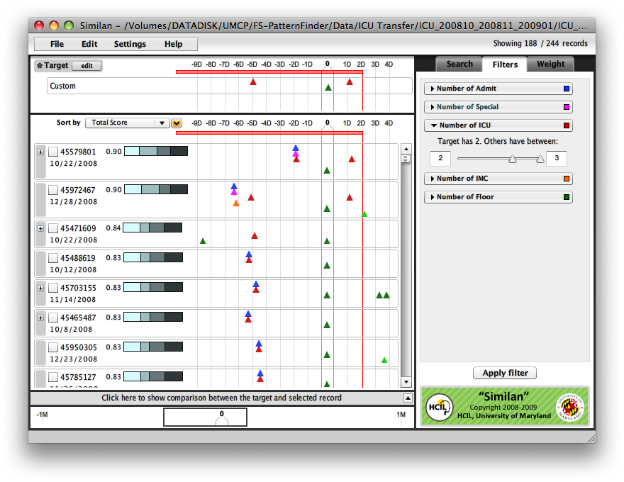

Finding Patients Who Were Transferred from ICU to Floor and Back to ICU within 2 DaysThis page provides instructions on how to find patients who were transferred from ICU (Intensive Care Unit) to Floor (Normal Bed) and transferred back to ICU within 2 days using Similan (http://www.cs.umd.edu/hcil/similan). You must have Similan installed on your machine before performing this task. These instructions must be followed exactly. Caution: Make sure that your data is in the correct LifeLines2/Similan format.
1. Load the data file
1.1 Click on "File" from the menu and click on "Load Data...". A dialog box will appear.
2. Adjust the time reference point (Align) to the time that patients went to floorClick on the drop-down list under "Align by" label and select "Floor". We then call "Floor" the sentinel event. 
3. Draw the events on the timeline
3.1 Click on "edit".

4. Set the rangeDraw a selection on the top of the timeline to specify range of interest (indicated by red line). In this case, set the range to 15 days before Floor until 2 days after Floor. 5. SearchClick on "Search" and you will get the results. The most similar records (by default definition of similarity) are on the top. 
6. Filter
To increase the precision of the result, we can set the filters.

7. DoneThis is the result. In this example, the top 7 patients from 244 patients were transferred from ICU to floor and transferred back to ICU within 2 days. 
Note: If any problem persists, please contact Krist (kristw at cs.umd.edu) for technical support. |